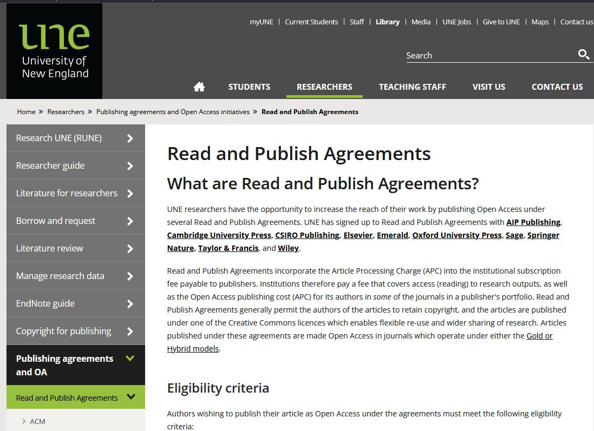

My Projects
Selected works showcasing my technical skills and problem-solving approach

Behavioral Neuroscience Platform
Research & Measurement Platform
Collaborated with UNSW's Behavioral Neuroscience Lab to develop a web-based gambling behaviour measurement program with complex experimental designs.
JavaScript
jsPsych
Docker
JATOS

UNE Read and Publish Journal Tool
Data Integration & Automation
Delivered a comprehensive Excel-based solution that helps researchers identify eligible journals under various publishing agreements. This tool reduced publication research time by 80% and streamlined journal management workload from 40 hours down to just 2.
PowerQuery
Excel
M Language
Data Processing